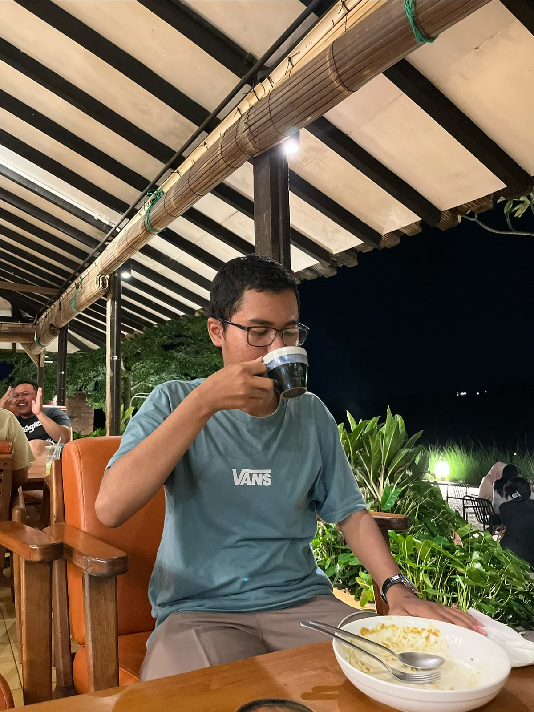

● ● ●ruang-kopi
01 / WEB
☕
Tempat singgah, rasa nyaman.[Nama proyek pertama]
[Satu kalimat tentang proyek dan peranmu.]
PORTOFOLIO · 2026
Halo, saya Jona Faozan Putra Pratama, seorang Data Analys. Saya senang merancang hal digital dengan tujuan yang jelas, detail yang pas, dan sedikit sentuhan kejutan.

Saya percaya karya yang bagus dimulai dari rasa ingin tahu. Saya suka mengulik masalah, menemukan ide yang sederhana, lalu mengubahnya jadi sesuatu yang mudah dipakai dan menyenangkan dilihat.
Saat ini saya fokus mendalami Data di dunia programmer. Di luar layar, biasanya saya menikmati Film, olahraga, belajar dan mencari inspirasi dari hal-hal kecil sehari-hari.
Ceritakan ide kamuMasih berkembang, selalu ada cerita di baliknya.
[Satu kalimat tentang proyek dan peranmu.]
[Ceritakan sedikit ide di balik karya ini.]
[Apa yang kamu buat atau pelajari dari proyek ini?]
Ganti kartu ini dengan proyekmu sendiri — yang kecil juga layak diceritakan.
PUNYA IDE? SAYA MAU DENGAR.
Punya proyek, pertanyaan, atau cuma ingin menyapa? Kotak masuk saya terbuka.
Kirim email